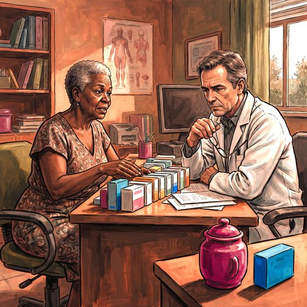

Consulta rápida à beira do leito
Condutas, doses e interações.
Referências da aula · 7
- Oliveira EM, Ferreira LC, Silva MC, Hattori WT. Optimizing medication use in older adults in primary care: a systematic review of the effectiveness of deprescribing interventions. Geriatr Gerontol Int. 2026;26(7):e70677. PMID 42493424. doi:10.1111/ggi.70677.PubMedDOI
- Oliveira MG, Moreira PM, Amorim WW, Boockvar K. Deprescribing hypertension medication in older adults: can it lower drug burden without causing harm? Clin Geriatr Med. 2024;40(4):659-68. PMID 39349038. doi:10.1016/j.cger.2024.04.012.PubMedDOI
- 2023 American Geriatrics Society Beers Criteria® Update Expert Panel. American Geriatrics Society 2023 updated AGS Beers Criteria® for potentially inappropriate medication use in older adults. J Am Geriatr Soc. 2023;71(7):2052-81. PMID 37139824. doi:10.1111/jgs.18372.PubMedDOI
- O'Mahony D, Cherubini A, Guiteras AR, et al. STOPP/START criteria for potentially inappropriate prescribing in older people: version 3. Eur Geriatr Med. 2023;14(4):625-32. PMID 37256475. doi:10.1007/s41999-023-00777-y.PubMedDOI
- Oliveira MG, Amorim WW, Oliveira CRB, et al. Consenso brasileiro de medicamentos potencialmente inapropriados para pessoas idosas. Geriatr Gerontol Aging. 2016;10(4):168-81. — única lista explícita brasileira; atualização dos mesmos autores em Clin Geriatr Med 2024 (acima).
- Hanlon JT, Schmader KE, Samsa GP, et al. A method for assessing drug therapy appropriateness (MAI). J Clin Epidemiol. 1992;45(10):1045-51. PMID 1474400. — instrumento implícito de referência, sem substituto validado até hoje.PubMed
- Freitas EV, Py L, organizadores. Tratado de Geriatria e Gerontologia. 5ª ed. Rio de Janeiro: Guanabara Koogan; 2022.
Documentos oficiais
Leis e publicações do Ministério da Saúde sobre o cuidado da pessoa idosa, de acesso livre.
Abrir os documentos